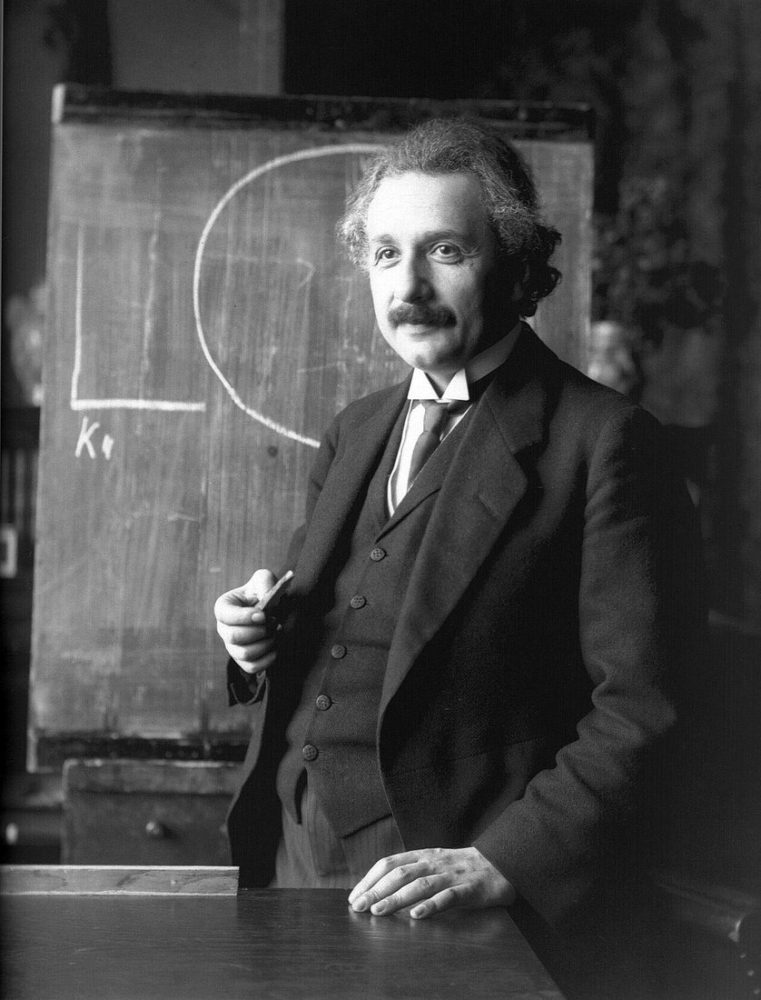
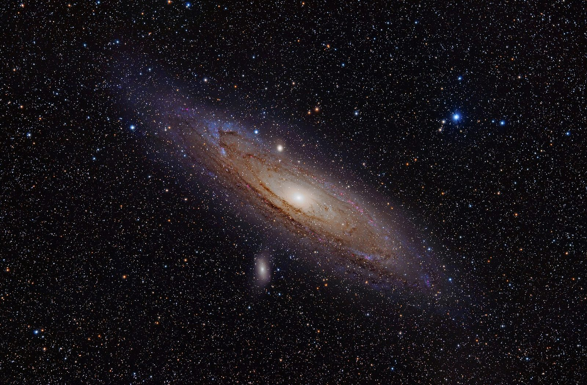
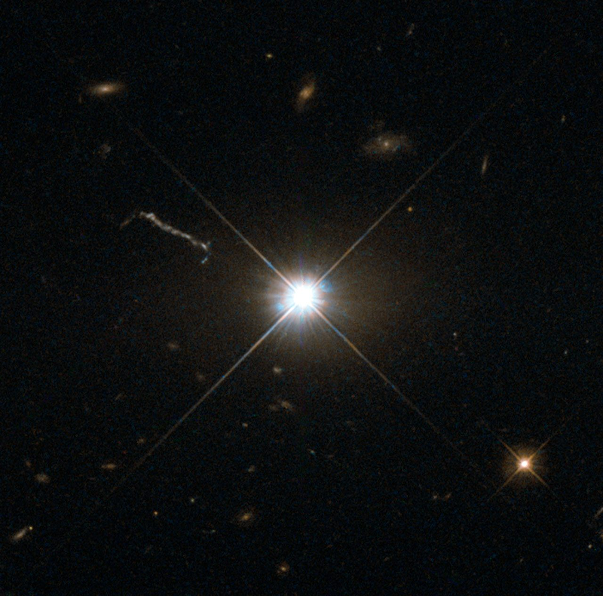

How we found out — a fudge factor its author regretted, a smudge that doubled reality, the redshift that set everything moving, and the beginning that happened everywhere at once. Including here.
In 1917, Einstein pointed his brand-new general relativity at the universe as a whole, and it told him something he refused to believe: a universe full of matter cannot just sit there. Gravity pulls everything toward everything; a static cosmos should be collapsing. But the astronomy of 1917 said the universe was static — an unmoving sea of stars. So Einstein reached into his equations and added a term: the cosmological constant, Λ — a built-in repulsion of empty space, tuned to exactly cancel gravity.
The problem isn't that the balance is impossible. It's that the balance is a pencil standing on its tip. Nudge the universe a hair bigger and repulsion (which grows with size) outruns gravity (which weakens with size) — runaway expansion. A hair smaller and gravity wins — collapse. Perfect balance survives nothing. Try it below: tune Λ, run it, and when you achieve perfect stillness, press nudge.
← The famous "biggest blunder of my life" quote reaches us secondhand through George Gamow, so enjoy it as anecdote. The regret was real either way.

While theorists argued, the sky held a quieter mystery: the nebulae — bright smudges scattered between the stars, assumed to be clouds of dust inside our galaxy. The biggest was Andromeda. Deciding what the smudges were required the hardest measurement in astronomy: distance. A dim light might be a candle nearby or a lighthouse far away; a telescope alone cannot tell.
The key was found at Harvard by Henrietta Swan Leavitt — hired as a human "computer" to catalog star brightnesses, at a wage history should be embarrassed by. Studying thousands of pulsing stars called Cepheids, she discovered in 1912 that their rhythm is a label: the slower the pulse, the brighter the star truly is. That changes everything. Time the pulse and you know the true wattage; compare with how dim it looks and the inverse-square law hands you the distance. A pulsing clock is a lighthouse that tells you its own candlepower.
← Leavitt's law is the first rung of the cosmic distance ladder. Nearly every distance in this site stands on it.
In 1923, Edwin Hubble found a Cepheid inside the Andromeda smudge and timed it. Time the three below yourself — and notice what all three answers agree on.

Meanwhile in Arizona, Vesto Slipher had spent a decade doing something nobody had thought worthwhile: taking spectra of the nebulae. Starting in 1912 he found their light shifted — almost always toward the red. You know the sound version: an ambulance drops in pitch as it passes, because receding sources stretch their waves. Slipher's galaxies read like a highway of departures.
One caution this site has earned the right to make: for distant galaxies the stretch isn't really the ambulance effect — chapter 11 showed you the honest mechanism. The wave is stretched in transit, by the expansion of space itself. Same observable, deeper cause. Then Hubble did the decisive thing: he combined Slipher-style velocities with Leavitt-style distances, and in 1929 the pattern fell out — the farther the galaxy, the faster it recedes. A straight line through the sky. Build it yourself below.
← Credit where due: Hubble's data showed expansion. The acceleration of expansion was found in 1998, by two teams timing exploding stars — Perlmutter, Schmidt and Riess took the 2011 Nobel for it. That discovery is what resurrected Λ.
The caption above notes that the two best modern measurements of that slope disagree. Here they are with their error bars drawn to scale, plus the arithmetic that turns "they disagree" into a number a physicist would accept — and what an 8 percent argument about H₀ actually costs you when you try to say where a galaxy is.

Here is the picture school probably gave you: a cosmic egg floating in blackness, detonating, debris flying outward into empty space. It is wrong in the most instructive way possible. An explosion has a center and an edge. The universe has neither. Chapter 13 left you a loaded question — why does the first light surround us instead of shining from one spot? — and this is the answer: because the beginning happened everywhere. Every point in space, including the one your chair occupies, was once hot, dense, and glowing. The CMB wraps the sky because the fire was never somewhere else.
Run the film backward and expansion doesn't converge on a point — it converges on a condition: everything closer to everything, everywhere, without a middle. Run it forward and every galaxy sees the same thing: all the others receding, faster with distance — Hubble's law emerging from pure geometry, no center required. The grid below is the whole argument. Click any dot to crown it the center of the universe. Notice how much that changes: nothing.
← And the first sliver of a second? Inflation: space stretching by a factor of at least ~10²⁶ almost instantly — a grain of sand to roughly a galaxy, as a lower bound. It is the leading account of why the universe is so smooth; its details are still being fought over honestly.
And that closes the loop this site opened with a single sentence. You are moving at 600 km/s toward something you have never seen — and now you know the whole of it: what pulls (a watershed's drain, dressed as a monster), through what you fall (a thin, quiet, comfortable hole), how far seeing reaches (46.5 billion light-years, to a wall of first light), and where it all began (here — and everywhere else, all at once). Eighteen chapters ago that sentence was a threat. It was always just your address.